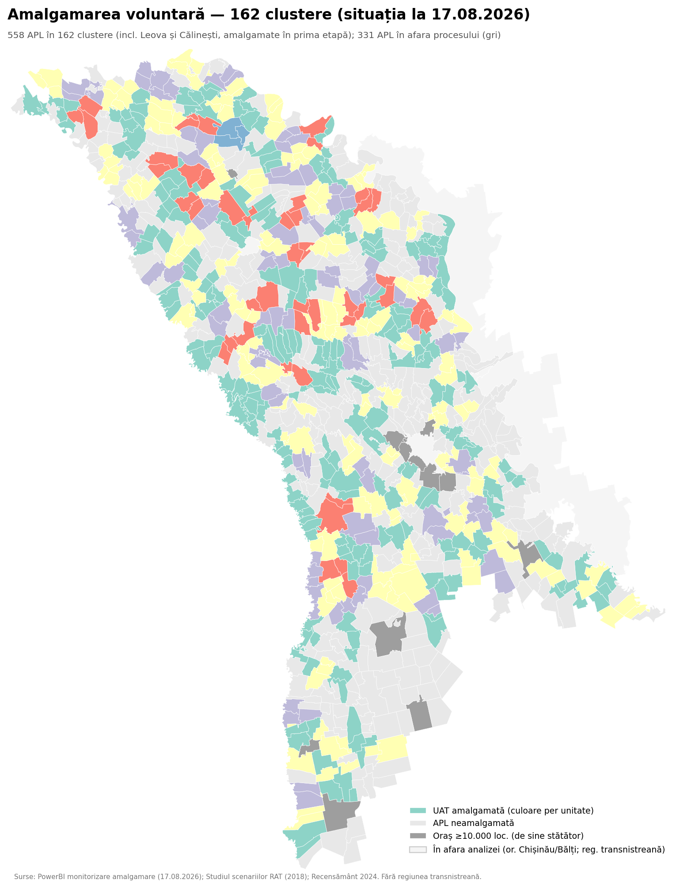
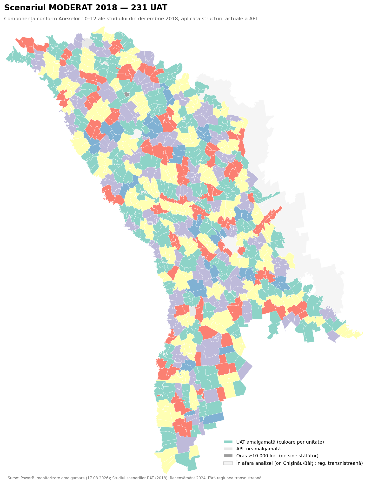
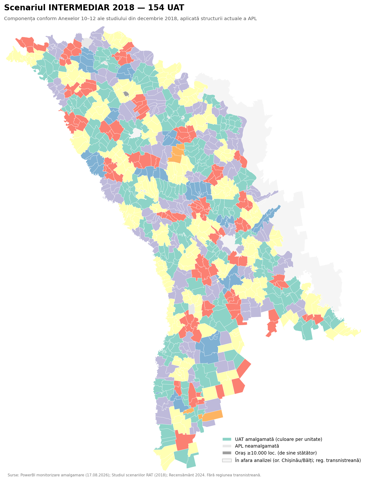
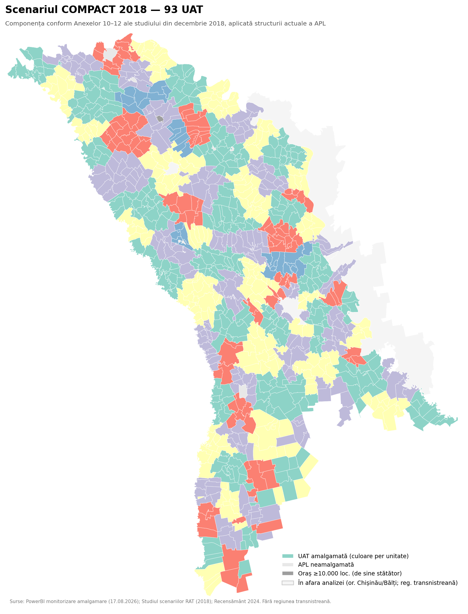
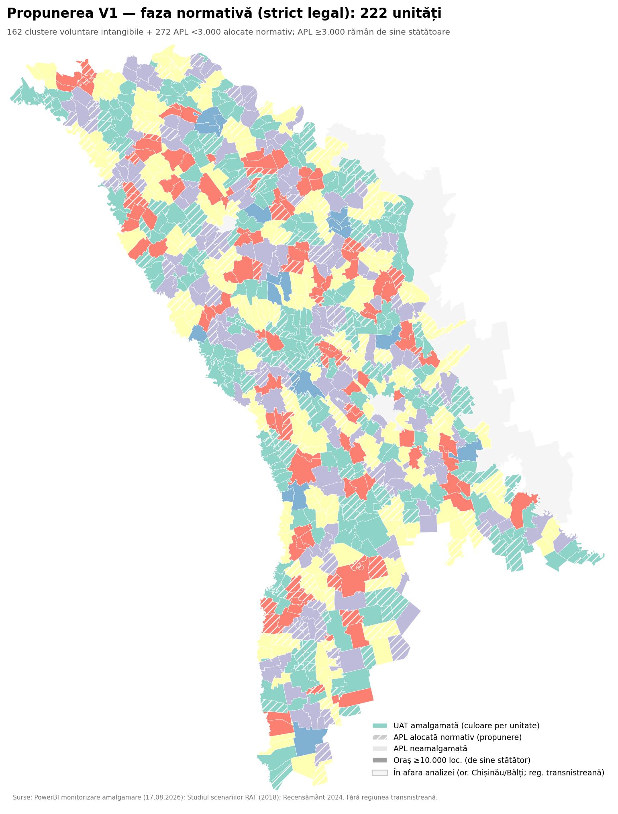
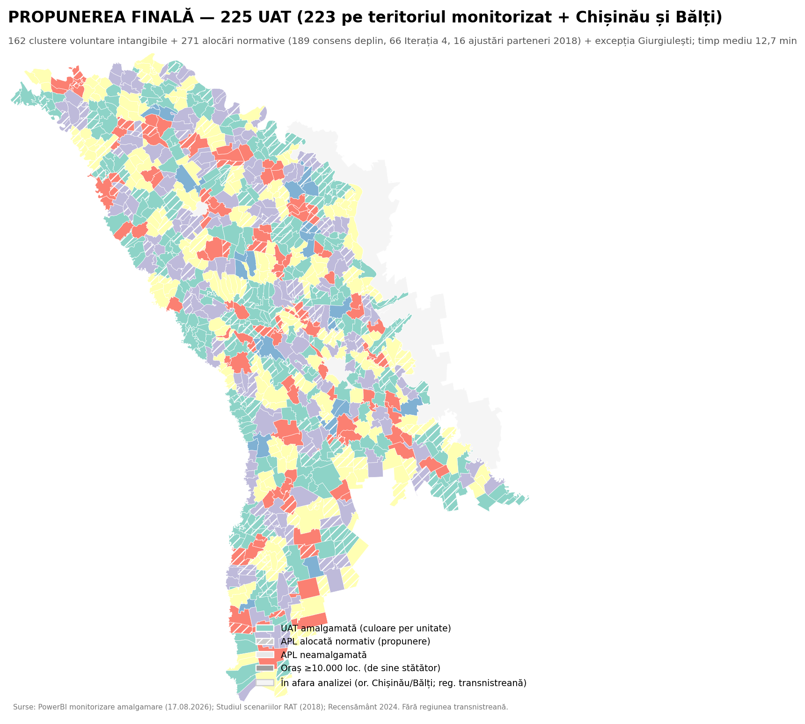

Analiză comparativă a rezultatelor fazei voluntare de amalgamare a APL de nivelul I (august 2026) cu cele trei scenarii ale studiului din decembrie 2018, și propunerea finală pentru faza normativă — determinată iterativ, prin patru iterații de modelare comparate sistematic, pe geometrie corectată.
Analiza acoperă teritoriul controlat de autoritățile constituționale ale Republicii Moldova (fără regiunea transnistreană). Populația: Recensământul 2024 — reședința obișnuită. Material analitic independent; nu reprezintă politică guvernamentală adoptată.
Situația la 17 august 2026, pe baza tabloului de bord public de monitorizare a amalgamării.
558 din 890 APL participă la amalgamarea voluntară; 125 clustere finalizate.
Procesul voluntar urmează logica scenariului moderat 2018 (231 UAT), dar la scară mai fragmentată.
APL sub 3.000 de locuitori rămase în afara procesului voluntar, vizate de faza normativă.
Inclusiv Chișinău și Bălți ca ancore municipale; timp mediu de acces 12,7 min, o singură alocare peste 30 de minute.
Ce am comparat. Componența celor 162 de clustere formate voluntar (inclusiv unitățile deja amalgamate Leova și Călinești) a fost confruntată, primărie cu primărie, cu cele trei scenarii spațiale ale studiului din decembrie 2018 (moderat — 231 UAT, intermediar — 154, compact — 93) și cu registrul procesului de amalgamare normativă.
Ce rezultă. Amalgamarea voluntară reproduce nucleele scenariului moderat: 70 din 162 de clustere se suprapun în proporție de cel puțin 50% cu grupurile acestuia. Prețul voluntariatului este fragmentarea — 104 clustere au sub 5.000 de locuitori, iar 26 au centre cu mai puțin de 1.500. Recalculate cu populația recensământului din 2024, chiar 43 de unități ale scenariului moderat ar coborî sub 3.000 de locuitori — un argument pentru unități mai mari acolo unde geografia o permite.
Propunerea finală pentru faza normativă. Patru iterații de modelare (Iterația 1 — ancorată în designul teritorial al studiului 2018; Iterația 2 — timpi de parcurs măsurați pe rețeaua rutieră OSM; Iterația 3 — varianta hibridă de consens și arbitraj; Iterația 4 — geometria corectată cu 891 UAT) au fost sintetizate printr-o regulă de decizie explicită: 189 de alocări de consens deplin, 66 preluate din Iterația 4 (timp rutier superior) și 16 ajustate către partenerii din scenariul moderat 2018, la timp egal sau mai bun. Rezultatul: 225 UAT, o singură excepție sub 3.000 de locuitori (Giurgiulești, statut special), 51 de clustere inter-raionale — raionul nu este criteriu sau barieră. Clusterele voluntare rămân nuclee intangibile — componența inițială și centrele decise se păstrează, dar 100 dintre ele au fost extinse cu UAT alocate normativ; niciunul divizat, niciun centru decis înlocuit.
| Varianta | Unități | Pop. mediană | <5.000 loc. |
|---|---|---|---|
| Situația actuală | 890 | 1.250 | 839 |
| Clustere voluntare (2026) | 162 | 4.369 | 104 |
| Scenariul moderat (2018) | 230 | 5.404 | 105 |
| Scenariul intermediar (2018) | 153 | 8.357 | 32 |
| Scenariul compact (2018) | 94 | 15.406 | 3 |
| Iterația 1 — V1 (strict legală) | 222 | 5.841 | 83 |
| Iterația 1 — V2 (harta completă) | 197 | 6.294 | 66 |
| Iterația 3 — V3 (hibrid) | 222 | 6.021 | 76 |
| PROPUNEREA FINALĂ | 225 | 6.099 | 71 |
Populația: Recensământ 2024, reședința obișnuită. Detaliile complete — în registrele Excel descărcabile.
Apasă pe orice hartă pentru versiunea la rezoluție completă. Pentru explorare pe fiecare primărie, folosește harta interactivă.

1 · Amalgamarea voluntară (162 clustere)

2 · Scenariul moderat 2018 (231 UAT)

3 · Scenariul intermediar 2018 (154 UAT)

4 · Scenariul compact 2018 (93 UAT)

5 · Iterația 1 — V1, strict legală (222 unități)

★ PROPUNEREA FINALĂ — 225 UAT (sinteza modelărilor)
Cum s-a ajuns, pas cu pas, la propunerea finală. Textul complet: Metodologia (PDF).
Nu de la o hartă ideală, ci de la cele 162 de clustere formate voluntar — tratate ca nuclee intangibile: componența inițială și centrul decis se păstrează integral, dar nucleele pot primi noi UAT (100 de clustere au fost extinse prin alocările normative). Problema rămasă: 272 de APL sub 3.000 de locuitori, de alocat.
Scenariile studiului din decembrie 2018 (Anexele 9–12) sunt scheletul de proiectare: procesul voluntar urmează scenariul moderat (Jaccard 0,40), deci partenerii de grup din acest scenariu sunt candidații naturali de alocare.
Șase criterii operaționalizate: accesibilitate (timp rutier OSM, prag 30–35 min, contiguitate obligatorie) · demografic (min. 3.000; centre conform Anexei 9) · financiar (IVPF ≥150 lei + 40–50% din maxim) · coerența cu designul 2018 · protecții etno-demografice (UTAG, Taraclia) · neutralitatea raionului.
Patru iterații, fiecare verificând-o pe precedenta: Iterația 1 (V1/V2 — designul 2018, registrul normativ complet) → Iterația 2 (A/B — timpi rutieri măsurați, test fiscal) → Iterația 3 (hibrid: consens + arbitraj pe criterii) → Iterația 4 (geometria corectată, 891 UAT). Finala sintetizează Iterațiile 3 și 4: 189 alocări de consens + 66 preluate + 16 ajustate — fiecare cu proveniența deciziei și criteriul decisiv înregistrate. Propunerea este integral auditabilă.
Propunerile au fost determinate interactiv și iterativ cu sprijinul modelelor de inteligență artificială Claude Fable 5 și OpenAI Sol 5.6 Extra High, sub coordonarea și validarea autorului — fiecare iterație verificată încrucișat de celălalt model, divergențele soluționate pe criterii.
Toate materialele pot fi consultate și reutilizate cu citarea sursei.
Straturi vectoriale pe geometria corectată (891 UAT, OSM). Deschide fișierul .qgs în QGIS pentru proiectul complet cu 10 straturi.
Pagina de față privește APL 1 — amalgamarea orașelor și comunelor (nivelul primăriilor). Studiul conex privește APL 2 — nivelul al doilea, astăzi raioanele: 7 regiuni funcționale provizorii pe teritoriul administrat, derivate din zone de influență urbană modelate pe rețeaua rutieră, ca reper analitic pentru viitoarele unități de nivelul II. Hartă interactivă, atlas cartografic, componența celor 904 unități consultabilă online și date GIS descărcabile.